v1.0.0-2022.01.17
Fast_Responder是一个可以让你快速创建Http请求应答器(responder)的服务。应答器可以接收配置的任意请求路径的请求，并按照你的配置对请求参数进行判断，以返回不同的结果。除了处理请求外，应答器还可以对任意个请求地址按你配置的延迟时间，请求头和参数发起Http请求。本质上，fast_responder是一个动态mock服务。
你可以在这里获取该项目的服务端和客户端源码(客户端不是非必须的,但是建议使用)
如有建议或疑问，欢迎给我发送邮件说明，感谢您的意见.
邮箱: silwings@163.com
写这个服务主要是为了应对工作中遇到的一些特殊场景，比如：
对接第三方接口时,对方提供的接口没有测试环境，或有调用次数限制。
团队合作时，所开发的功能需要依赖同事的接口，但同事还没完成接口开发（前端-后端，后端-后端）。
要调用的接口是发起一个操作流程，操作完成后会对我方进行回调。但发起操作流程后，该流程难以完成，或耗时很长。
*该服务不适合数据交互需要加解密的场景
运行该服务仅需要一个Mysql服务，要求不低于8.0版本。
xxxxxxxxxx{ "name":"Demo config", "httpMethod":"GET", "keyUrl":"/demo/url", "categoryName":"示例配置", "delayTime":0, "tasks":[ { "conditions":[ "1 == 1", "${age} >= 10", "name =IsNotBlank=" ], "content":{ "body":{ "timestemp":"-TSNow(ms)-", "name":"${name}", "id":"-UUID()-" }, "headers":{ "authToken":"8888888888" }, "httpMethod":"POST", "params":{ "keyA":[ "key_Av1", "keyA_v2" ], "keyB":[ "keyB_v1" ] }, "requestUrl":"http://localhost:8088/hello/word" }, "delayTime":2000, "name":"My http task" } ], "results":[ { "body":null, "conditions":[ "${age} == 18" ], "headers":{ "authToken":"-TSFNow(yyyy-MM-dd HH:mm:ss)-" }, "msg":"Hello Word !", "resultName":"My Result A" }, { "body":null, "conditions":[ "${age} == 15" ], "headers":{ }, "msg":null, "resultName":"My Result B" } ]}字段信息
| 主体 | 类型 | 描述 | 必填 |
|---|---|---|---|
| name | string | 应答器名称 | true |
| httpMethod | string | 应答请求方式(大写) | true |
| keyUrl | string | 应答地址 | true |
| categoryName | string | 应答器分类名称 | false |
| delayTime | long | 应答器响应延迟时间(ms),默认0 | false |
| tasks | array | 应答器的任务集 | false |
| |--name | string | 任务名称 | true |
| |--delayTime | long | 延迟时间(ms),默认0 | false |
| |--conditions | array | 任务执行条件 | false |
| |--content | obj | 任务内容 | true |
| |--|--httpMethod | string | 请求方式(大写) | true |
| |--|--requestUrl | string | 请求地址 | true |
| |--|--headers | map | 请求头 | false |
| |--|--params | map | 请求参数(注意value为字符数组) | false |
| |--|--body | obj | 请求体 | false |
| results | array | 返回值列表 | false |
| |--resultName | string | 返回值名称 | true |
| |--body | obj | 响应体 | false |
| |--msg | string | 响应内容(只有body为null才返回msg) | false |
| |--conditions | array | 返回执行条件 | false |
| |--headers | map | 响应头 | false |
当应答器中包含task时，在应答器对接口进行响应之前，会先遍历task集，依次判断执行条件（conditions，如果conditions 是empty，默认为true 。conditions说明见下文），如果条件判断为true，会创建task任务，等待执行。
所有task任务会被缓存在一个无界延迟队列（DelayQueue）中，按照delayTime排序。如果配置的延迟时间相同，多个task可能同时执行（多线程）。
task任务目前提供三个自定义配置
task任务中配置的执行条件（conditions），请求地址（requestUrl），请求头（headers），参数（params），请求体（body）均适用替换操作符,替换操作符可以对字符进行一些特定处理（见下文）。
替换操作符（见下文）。
条件（condition）是用来确定task或result是否执行的表达式（Expression）集，也就是一个集合为一个condition。配置格式为在集合中添加条件表达式。
集合中的每一个元素（表达式）之间的关系可以理解为Java中的&&，当前一个表达式结果为false时，后面的表达式不计算，整个condition直接返回false。
如果条件集合为empty，该condition返回true。
表达式格式：参数A+空格+条件符号+空格+参数B。其中参数A和参数B为必填。如果条件符号只需要左条件（参数A），参数B可以不写。条件表达式的三个元素之间的空格不可省略。
条件符号
等值条件
==
!=
数值条件
>
>=
<
<=
空判条件
=IsNull=
=IsNotNull=
=IsBlank=
=IsNotBlank=
注意事项！
替换操作符可以对字符串进行特殊处理，如生成数据，引用数据，通过和condition组合可以进行动态逻辑判断。
同一个字符串中可以添加多个替换操作符，但不允许嵌套。
操作符介绍
${}
查询替换符，可以从请求信息参数（param，path param，body）中获取指定字段的值来对符号所在位置进行替换。通过在{}之间添加文本来指定字段，支持简单Json Path语法和标准Json Path语法，如果对标准Json Path不熟悉，可以使用简单Json Path快速上手。
简单Json Path语法（该语法为我自定义的简单语法）
查找最外层key：直接填写字段名
查找内层key：填写多个字段名，之间使用英文字符 . 分隔
查找数组指定角标：填写字段名+[]，[]内填写有效角标值。例：studentList[0]，意为获取studentList的0角标对象
查找替换示例1：
示例2：
示例3：
标准Json Path
标准Json Path指由Fast Json提供的Json Path语法规则，该语法可被JSONPath类解析。语法规则如下（想要了解更多信息请阅读fast json相关文档）：
| JSONPATH | 描述 |
|---|---|
| $ | 根对象，例如$.name |
| [num] | 数组访问，其中num是数字，可以是负数。例如$[0].leader.departments[-1].name |
| [num0,num1,num2...] | 数组多个元素访问，其中num是数字，可以是负数，返回数组中的多个元素。例如$[0,3,-2,5] |
| [start:end] | 数组范围访问，其中start和end是开始小表和结束下标，可以是负数，返回数组中的多个元素。例如$[0:5] |
| [start:end :step] | 数组范围访问，其中start和end是开始小表和结束下标，可以是负数；step是步长，返回数组中的多个元素。例如$[0:5:2] |
| [?(key)] | 对象属性非空过滤，例如$.departs[?(name)] |
| [key > 123] | 数值类型对象属性比较过滤，例如$.departs[id >= 123]，比较操作符支持=,!=,>,>=,<,<= |
| [key = '123'] | 字符串类型对象属性比较过滤，例如$.departs[name = '123']，比较操作符支持=,!=,>,>=,<,<= |
| [key like 'aa%'] | 字符串类型like过滤， 例如$.departs[name like 'sz*']，通配符只支持% 支持not like |
| [key rlike 'regexpr'] | 字符串类型正则匹配过滤， 例如departs[name like 'aa(.)*']， 正则语法为jdk的正则语法，支持not rlike |
| [key in ('v0', 'v1')] | IN过滤, 支持字符串和数值类型 例如: $.departs[name in ('wenshao','Yako')] $.departs[id not in (101,102)] |
| [key between 234 and 456] | BETWEEN过滤, 支持数值类型，支持not between 例如: $.departs[id between 101 and 201] $.departs[id not between 101 and 201] |
| length() 或者 size() | 数组长度。例如$.values.size() 支持类型java.util.Map和java.util.Collection和数组 |
| . | 属性访问，例如$.name |
| .. | deepScan属性访问，例如$..name |
| * | 对象的所有属性，例如$.leader.* |
| ['key'] | 属性访问。例如$['name'] |
| ['key0','key1'] | 多个属性访问。例如$['id','name'] |
简单path和标准path在使用上的区别：
简单版和标准版共存，是否会导致取值错误？
-RDBoolean()-
随机一个布尔值替换掉操作符
示例：
-RDInt()-
随机一个int数值替换掉操作符
可以在（）中传递参数（下列10,-5,20均为示例值，可换其他值）。
-RDLong()-
随机一个long数值替换掉操作符
可以在（）中传递参数（下列10,-5,20均为示例值，可换其他值）。
-RDDouble()-
随机一个double数值替换掉操作符
可以在（）中传递参数（下列10.0,-5.0,1.0均为示例值，可换其他值）。
-UUID()-
随机一个uuid替换掉操作符
可以在（）中传递限制长度（下列16,64均为示例值，可换其他值）。
-TSNow()-
生成当前时间的时间戳替换掉操作符
可以在（）中传递参数,ms和s为固定值，只能二选一
-TSFNow()-
根据指定格式生成时间
可以在（）中传递参数（下列yyyy-MM-dd HH:mm:ss为示例值,可切换其他正确时间格式）
强烈推荐使用Web客户端对应答器进行维护。你可以在我的仓库中找到它。
使用配置示例中的应答器进行演示。
创建并启用应答器
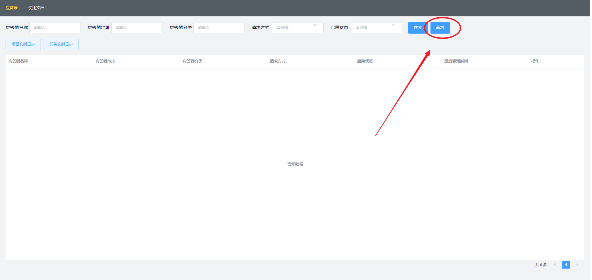
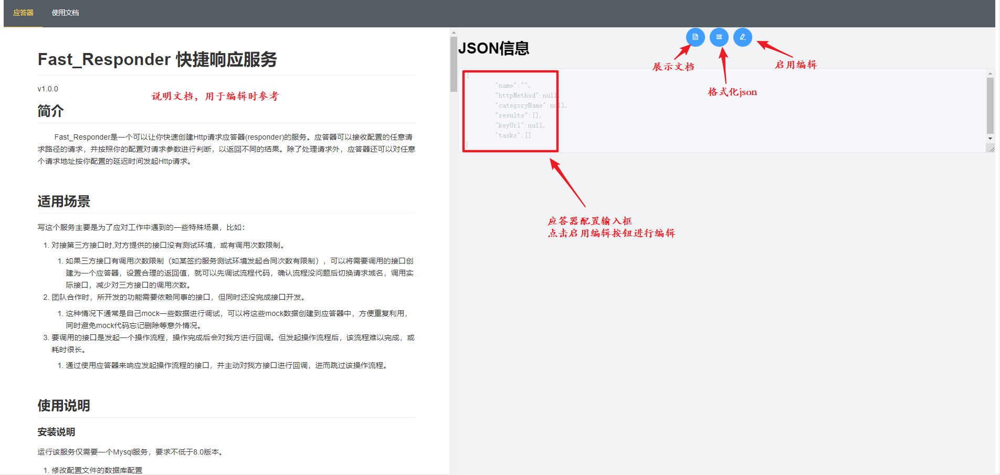
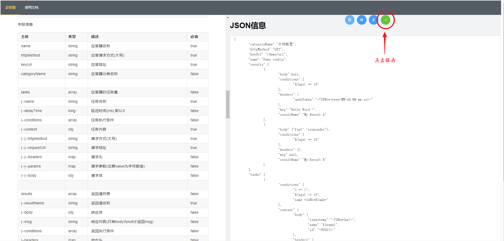
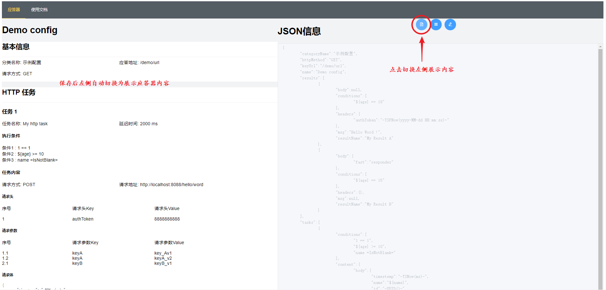
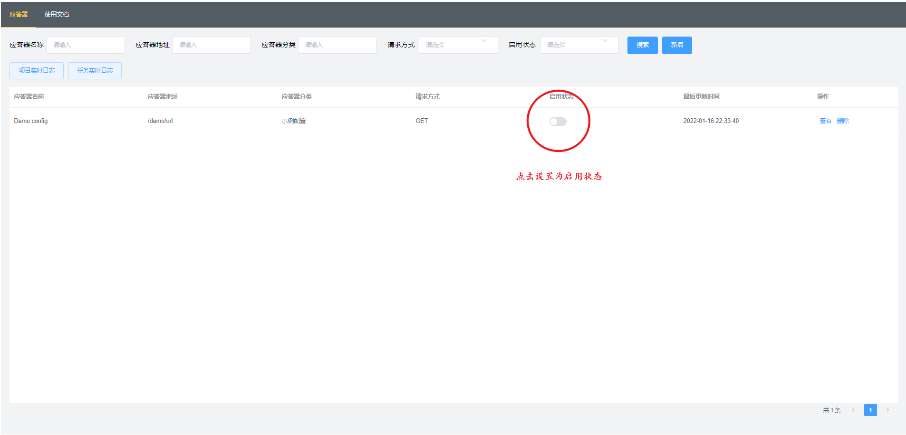
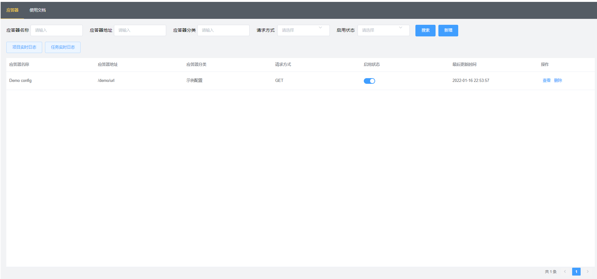
启动用于回调的测试服务,其中包含如下web接口
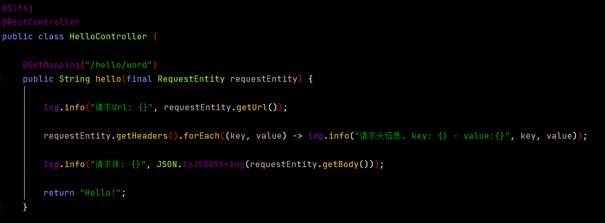
Postman测试
不触发任务和返回值
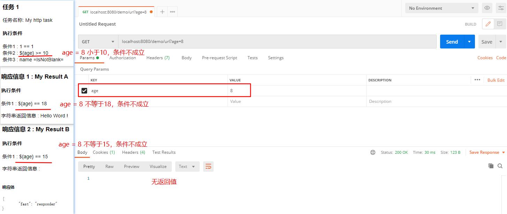
触发ResultA
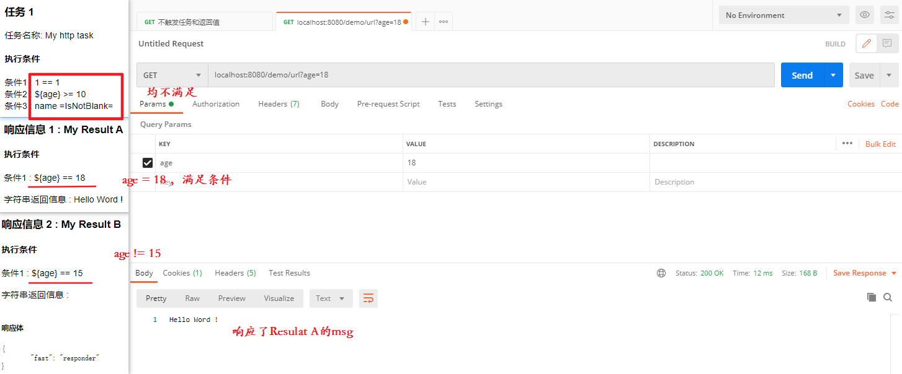
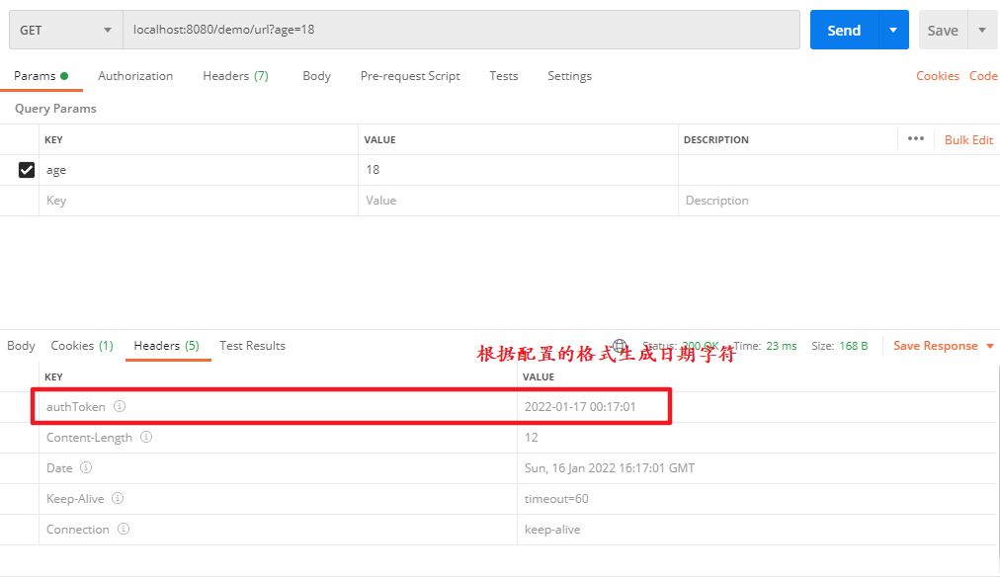
触发ResultB
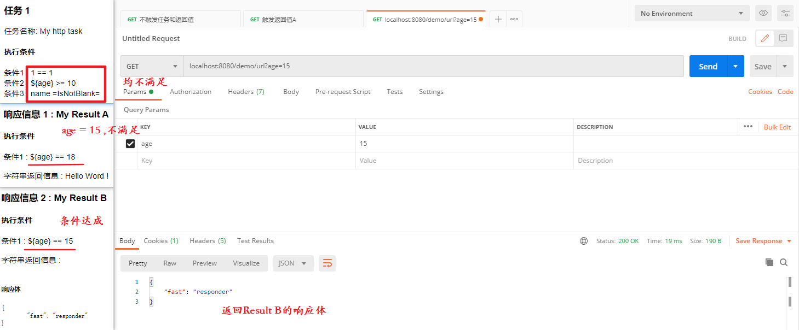
触发Task,ResultB
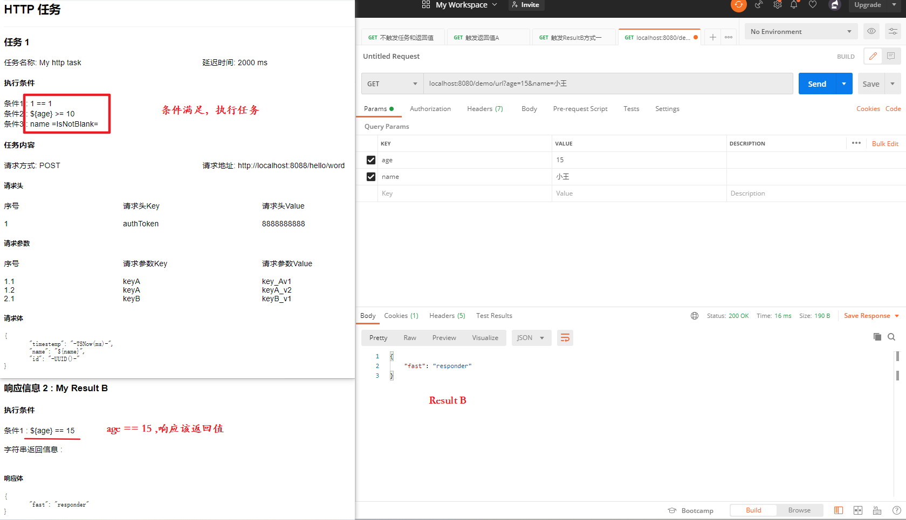
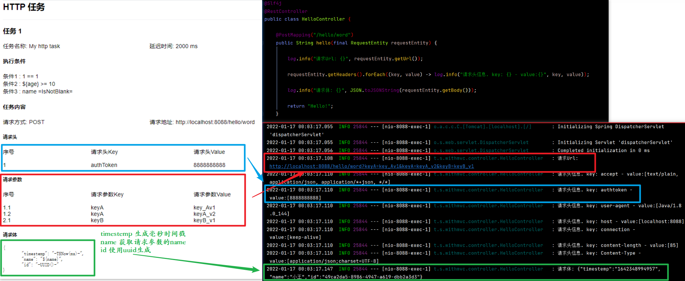
查看日志
实际使用过程中，经常会需要确认task或项目执行情况，如果只能通过控制台查看会比较麻烦，Fast Responder客户端提供了实时日志查看功能。默认日志等级INFO，可通过配置文件（logback.xml）调整。日志接口默认各接收最多同时10个连接，有新连接进入时，最早连接的连接将被断开。
task日志，仅打印task执行线程的日志
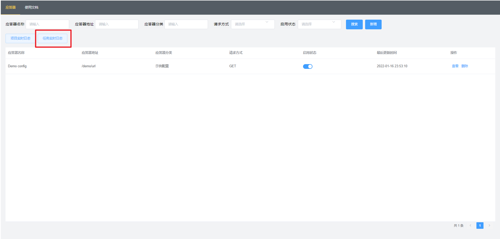
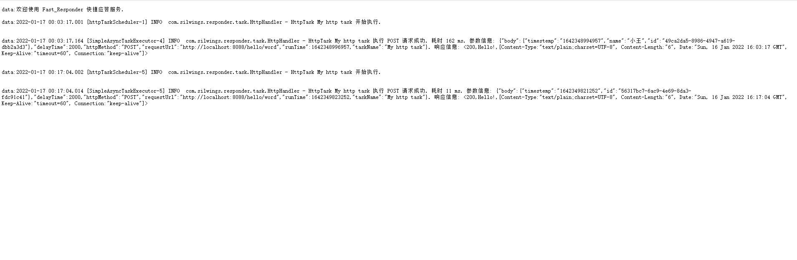
项目日志，打印项目的全部日志
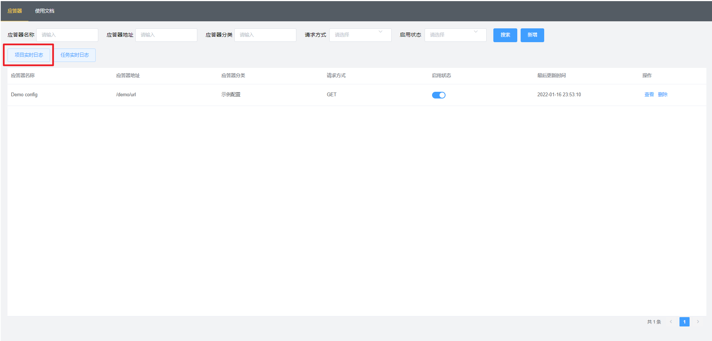
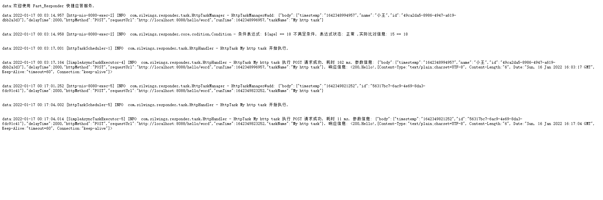
tips:
进行过编辑后，会自动禁用，需要重新启用。
keyUrl和httpMethod的组合应该是唯一的，但数据库并没有做限制，所有如果出现重复并同时启用的情况，将按照数据库默认排序获取第一个结果。
感谢你的阅读!
Silwings
2022-01-07